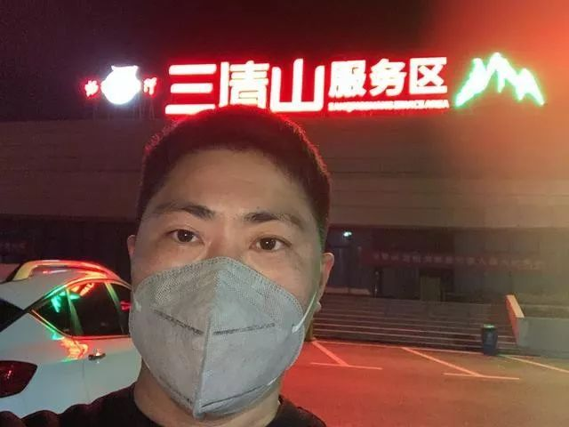

鄂M卡车的归乡之路
原文链接 备份链接 ********** *****“说实在的，我那段时间最大的奢望什么都不是，是能找个地方让我停下来，睡那么一会儿，我就满足了！”***** 驾驶室里的肖红兵。视频截图 文 | 新京报记者 魏芙蓉 编辑｜ …
昨晚我一夜没睡，今天早上就出发了，我想回大温州。
但是开了一整天，晚上六点了，我还在乐清北高速口吃旺旺雪饼。
这就是我的元宵节晚饭了。
加上今天，我已经在车上住了15天，啃方便面啃到口腔溃疡。

▲我在江西三清山服务区
我是安徽人，在温州做生意，身份证上住址是四川的，年前我去江西上饶看朋友。
然后，因为各地封路，我就哪里也去不了了。
我的衣服全都脏了、湿了，车子油只剩两格。
别的地方我不想去了，只想回我大温州。
但我折腾了一整天，现在（2月8日晚）还在路上，仍然回不了家……
01
突然我就火了，但我只想回家
滞留三清山服务区的这几天，我其实一直在想办法。
我每天发朋友圈刷屏，各个群里跟唐僧一样说我的遭遇，自己都嫌自己烦。
昨天我把自己的经历讲给一个朋友听，她写到了网上，看看能不能获得帮助。
晚上十点多到现在，我的手机消息就一直没停过。员工说：“经理，你上热门了。”
网络的力量真是太大了。
我明明戴着口罩，见过我的都认出了是我，有的还说我口罩戴反了。
过去在温州，我们那个镇上的餐饮圈里，我也算有点名气，但是这次是最出名的。
我没想过要这么出名啊，而且，为什么我还是回不了温州啊，谁来帮帮我？
早上我七点多就醒了。其实是一晚上基本没睡。
网友们有的同情我，有的骂我作。
我想了一晚上，我就是一本书啊。
起起伏伏，这些我经历得太多。我被车撞了两次，被水淹过两次，因为感染登革热被隔离过……你们放心，我会重新站起来！
其实啊，说我是老板，其实也只是个小小生意人，我在温州现在还是租的房子，一个月1500元。我说自己没钱加油真不是骗人，今年生意亏得太厉害。

▲出发后，我先到了青田服务站
早上我把车里收拾了一下，就准备出发。
我是个爱干净的人，这些天都在吃喝都在车里，太邋遢了。
昨天朋友们转给我一些钱，加油是够了，谢谢大家。
九点多，我出发了。
再见，三清山服务区，再见，老大哥。
02
温州高速口这么多，哪一个会为我打开？
温州有好几个高速路口，我打算先去七里港高速路口，不行再去乐清出入口，再温州东、温州南……
喝一罐咖啡，一个个试起来，开始！
往温州方向，一路上除了几辆货车，小汽车只有我一辆。
“这是什么地方，依然是如此的荒凉，那无尽的旅程，如此漫长，我是永远向着远方独行的浪子。”太冷清了，我放起歌，刚好有首许巍的，听得有点想哭。
我在青田服务区稍微休息了一下，这边也没有什么店开着了。
我有点低血糖，头有点晕，浑身发抖。
我又喝了点咖啡。
朋友给我看了一条消息，整个人又不好了。
那条消息上说，三返人员千万不要带着侥幸心理3月1日之前回温州，回来的话要自费隔离，一天800。
我还是又上路了，万一还是不要钱，或者只要一点钱呢？
▲我又到了七里港
15:07分，我到了温州七里港高速路口。这里完全被路障封死。
我把车靠边停好，去找工作人员。工作人员说，去乐清北试试吧，这里肯定过不去的。
镇上一个领导打电话给我，叫我不要急，再去试试，她也想办法帮我打听打听。
15:55分，我到了乐清北高速路口，果然，又已经封死了。
真的累了，我跑去问执勤的特警，难道没有办法了吗？他说，必须要有通行证，让社区或者公司来办。
我打110，打12345，打各种朋友的电话。打得我头更晕了。
得到的结果是，这种通行证是很难办出来的，一般只有防疫期间的一些特种行业才能办得出，我们餐饮业不属于这类。
我在温州也没有房子，租房所在的村领导我也不认识。
现在，我把车还是停在温州北高速入口。
天又黑了，又是一天要过去了。

▲吃了几块旺旺雪饼
车里还有几块旺旺雪饼，我吃了它，再想想办法。
可能今天还要在车里，那明天呢？
03
我终于下高速，但是……
又有朋友说，温州东高速口恢复了。
我再去试试。最差的结果，我还有老大哥。
19:13分，我来到了温州东。这里真的没有封！

▲剩下这一段路了！
工作人员把我拦下，我有些激动。
他们检查我的身份证，给我量体温，我把那份卫生院开的健康证明也拿了出来。
他们什么也没说，我的车子能过去了！
闯关成功！
但是朋友们又说，乐清已经封城了。我进得了温州，未必能进乐清。
果不其然，我下高速，到瓯越大桥入桥口被拦住了，交警看了我身份证，劝我返回，我说我实在动不了了，我在高速和车上已经待15天了，我心跳都加速了。
我给交警看了江西上饶医院开的证明，交警放我通行了。
我过了大桥，又一个卡口，我再次被拦。这里的交警依然劝我返回，我说我真的走不了了，我回哪里呀，江西也不是我的家，我只是去看个朋友，四川那么远。
我说我现在又累又乏，心跳加速。
有位交警听完我的讲述，打了一通电话，然后走过来，让我先坐一会儿，他给我泡了一碗方便面，另外一位交警给我拿了橘子。吃了方便面和橘子，我一下精神了很多。
他们说可以让酒店股东来接我，可是我酒店的股东不在温州。
交警又去打电话了，然后走过来对我说：“今晚，还要辛苦你一下，明天我们会想办法让你回乐清。”
现在，我的心应该可以放下了吧！？
谢谢所有一直关心我的朋友们！
原文链接 备份链接 ********** *****“说实在的，我那段时间最大的奢望什么都不是，是能找个地方让我停下来，睡那么一会儿，我就满足了！”***** 驾驶室里的肖红兵。视频截图 文 | 新京报记者 魏芙蓉 编辑｜ …
原文链接 备份链接 疫情时期，人从哪里来变得非常重要。50岁的肖红兵说自己是从「非疫区」来的，他指的是自己的那辆轻型货车。车内居民1，健康。 货车不仅是「非疫区」，也成了他暂时的「家」。他大概是公共卫生专家会赞扬的听话市民，几天几夜不离开 …
原文链接 备份链接 今天来信的作者老家在四川遂宁，新型冠状病毒疫情爆发后的 1 月 31 日，他接到单位要求，开始了 1780 公里的返京之旅。一路上，他用照片和文字记录下了沿途经历。 我的三千里自驾返京记 撰文：北红七哥 1 月 31 …
原文链接 备份链接 平时生活节奏太快，就像开车开到120码，突然停下，大家都不适应。 口述 | 严 欣 **整理 | 王仲昀** 很多温州人在外经商，每到春节就要回老家过年，我们一家是年前从上海回来的。 全国人民都在新闻中看到，约18万温 …
原文链接 备份链接 乌鸦曾是单读的一名编辑，在去年夏天离开单读编辑部之后，她依然留在北京，继续打拼。今年春节，乌鸦没有计划回家，也拒绝了朋友的出游邀约，而是继续驻守北京。令她未曾料到的是，新型冠状病毒疫情的到来，以及她武汉籍的身份，使这个 …